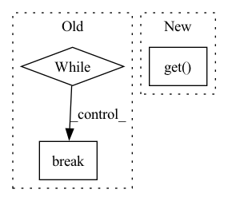

Pattern ID :6123
Before Change
raise ValueError(f"opening MP4 file "{fp}" failed")
frames = []
while cap.isOpened():
ret, frame = cap.read()
if ret:
frames.append(frame)
else:
break
frames = [cv2.cvtColor(frame, cv2.COLOR_BGR2RGB) for frame in frames]
return np.stack(frames, axis=0) // [t, h, w, c]
After Change
if not cap.isOpened():
raise ValueError(f"opening MP4 file "{fp}" failed")
all_frames = int(cap.get( cv2.CAP_PROP_FRAME_COUNT) )
num_frames = num_frames if num_frames > 0 else (all_frames - start_index)
if start_index + num_frames > all_frames:
raise ValueError(f"invalid parameters for start index ({start_index}) and frames ({num_frames}) "In pattern: SUPERPATTERN
Frequency: 3
Non-data size: 3
Instances Fragment ID: 21134256
Project Name: ais-bonn/vp-suite
Commit Name: 8ac777bcbf9d52240b0cec0d23efc13ca017251e
Time: 2022-01-27
Author: boltres@ais.uni-bonn.de
File Name: vp_suite/utils/utils.py
M Class Name: AnonimousClass
N Class Name: AnonimousClass
M Method Name: read_mp4(4)
N Method Name: read_mp4(1)
M Parent Class:
N Parent Class:
M File Name: vp_suite/utils/utils.py
N File Name: vp_suite/utils/utils.py
M Start Line: 109
M End Line: 124
N Start Line: 111
N End Line: 136
Before Change
output_que.put((url, image, filter_image))
self.assertEqual(output_que.size, size / 2)
while True:
ret = output_que.get()
if ret is None:
break
self.assertEqual(int(ret[1][len("image"):]), int(ret[2][len("filter_image"): ]))
t.join()
After Change
output_que.seal()
self.assertEqual(output_que.size, size / 2)
while output_que.size > 0:
ret.append(output_que.get() )
def test_seal(self):
input_que = DataQueue([("url", ColumnType.SCALAR), ("image", ColumnType.QUEUE)]) Fragment ID: 21134257
Project Name: towhee-io/towhee
Commit Name: 67b903cac7aea55a9499b65c0b4f0822d15c334b
Time: 2022-10-17
Author: junjie.jiang@zilliz.com
File Name: tests/unittests/runtime/test_data_queue.py
M Class Name: TestDataQueue
N Class Name: TestDataQueue
M Method Name: test_in_filter(1)
N Method Name: test_in_filter(1)
M Parent Class: unittest.TestCase
N Parent Class: unittest.TestCase
M File Name: tests/unittests/runtime/test_data_queue.py
N File Name: tests/unittests/runtime/test_data_queue.py
M Start Line: 243
M End Line: 263
N Start Line: 231
N End Line: 273
Before Change
stderr=subprocess.PIPE,
bufsize=1,
)
while processes_alive([jinad_process, flow_process]):
time.sleep(15)
logger.info("rolling update done in process")
// add query testing
query_doc = Document()
query_doc.text = "hello world"
response = _query_docs([query_doc.dict()])
assert response.json()["search"]["docs"][0].get("matches")
break
raise RuntimeError(
f"processes crashed/ended. jinad stderr: {jinad_process.stderr.readlines()}; app.py stderr: {flow_process.stderr.readlines()}"
)After Change
query_doc = Document()
query_doc.text = "hello world"
response = _query_docs([query_doc.dict()])
matches = response["search"]["docs"][0].get( "matches")
logger.info(f"got {len(matches)} matches")
assert matches
except (Exception, KeyboardInterrupt): Fragment ID: 21134255
Project Name: jina-ai/examples
Commit Name: f5b1bcec4d3ae544568b6f108fdf48ee71a3b776
Time: 2021-05-17
Author: cristian.mitroi@jina.ai
File Name: wikipedia-sentences-query-while-indexing/tests/test_query_while_indexing.py
M Class Name: AnonimousClass
N Class Name: AnonimousClass
M Method Name: test_query_while_indexing(0)
N Method Name: test_query_while_indexing(0)
M Parent Class:
N Parent Class:
M File Name: wikipedia-sentences-query-while-indexing/tests/test_query_while_indexing.py
N File Name: wikipedia-sentences-query-while-indexing/tests/test_query_while_indexing.py
M Start Line: 46
M End Line: 73
N Start Line: 47
N End Line: 69